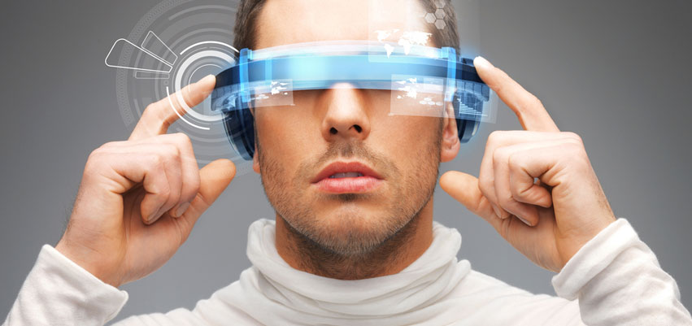

Що таке VR?
Віртуальна реальність - створений технічними засобами світ, який передається людині через його відчуття: зір, слух, дотик і інші. Віртуальна реальність імітує як вплив, так і реакції на вплив.
Типи VR
На даному етапі розвитку технологій VR серед них можна виділити наступні типи:
• Технології VR з ефектом повного занурення
• Технології VR без занурення.
• Технології VR зі спільною інфраструктурою.
• VR на базі інтернет-технологій.
Сфери використання VR
• Навчання — моделювання складної чи небезпечної діяльності, наприклад, керування транспортом, хірургічних операцій.
• Наука — візуалізація внутрішньої будови об'єктів, молекулярних і атомних структур. Зокрема в медицині віртуальна реальність забезпечує дистанційне і точне керування інструментами.
• Дизайн — побудова й редагування тривимірних моделей механізмів, споруд тощо; симуляція та дослідження різних впливів на них.
• Розваги — віртуальні тури, екскурсії, відеоігри з ефектом занурення в ігровий світ
• Військова сфера — тренування пілотів, водіїв, операторів, підрозділів з імітацією збройних сутичок тощо.